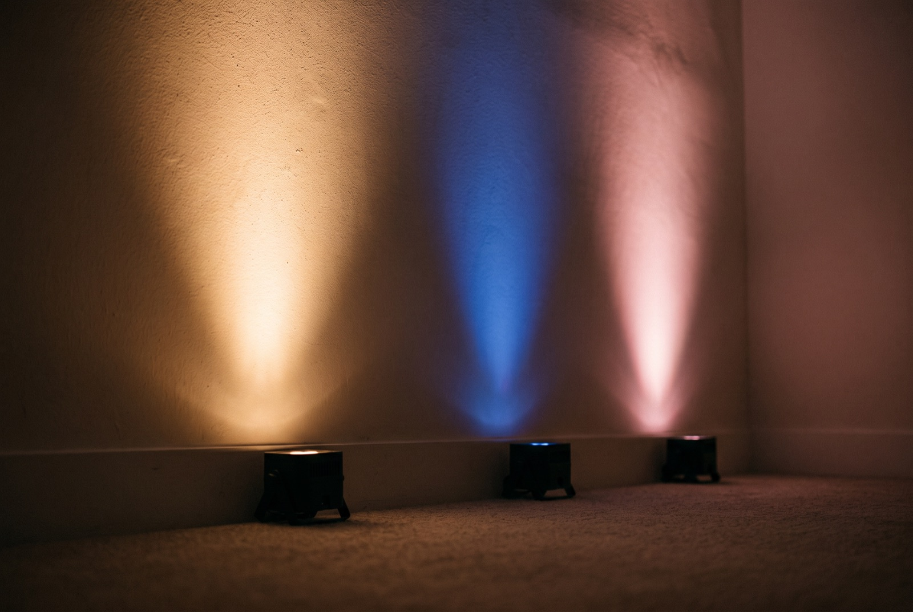

You walk into the ballroom after the florist has finished, and the room is either the color you pictured or it isn't. The linens look a little yellow, the blush roses look gray, and nobody can say why. Honestly, nothing changes a room faster than the light on its walls.
That is why couples searching for wedding uplighting in Miami usually land on the same question: what color? Here is how we think about it, how it plays in real Miami rooms, and what to ask before you book.

What Wedding Uplighting Does to a Room
Uplighting is a row of small LED fixtures set on the floor along the walls and aimed up. They wash the walls and columns with color, so the room looks finished instead of lit by a few bright ceiling fixtures. A plain white ballroom can turn warm amber, deep magenta, or soft blue depending on the night.
With wedding uplighting Miami couples get a real advantage, because so many hotel ballrooms and waterfront venues are neutral boxes. Light is one of the fastest ways to give them a personality, and it costs you no extra floor space or table decor. Our LED uplighting service covers the fixtures and the options.
Today's fixtures mix color instead of choosing from a short list. That means we can match the dusty rose from your invitation or the sage green in your bouquet, not a rough guess close to it.
How Color Plays at Real Miami Weddings
Warm white and amber are the quiet favorites for wedding uplighting Miami couples book for a candlelit dinner. In a Coral Gables ballroom, they make wood and gold details glow and keep skin tones soft in photos.
Blush and soft pink pair with white florals and ivory linens. On Miami Beach, couples often choose them for the ceremony and the dinner, because the whole room feels like a flower arrangement.
Deep blue and purple suit a night reception, especially a Brickell rooftop where the skyline is already part of the picture. At a waterfront venue in Bal Harbour, teal and soft blue echo the water outside the windows.
We love the shift after dinner. The room stays warm while people eat, and when the dancing starts the color deepens. That change tells every guest the party has begun, and it works best when it follows the music, which is why we tie it to our dance floor lighting.
Outdoor and tented weddings are their own case. In South Florida the sun sets late for part of the year, so uplights at a garden or waterfront reception will not read until dusk. We plan the turn-on time around sunset so the color shows up right when your guests sit down to eat.
Humidity and the occasional afternoon storm are part of life here too. We bring fixtures rated for outdoor use, cover them when the sky turns, and check every one before the doors open.
What to Look For When You Hire
Ask to see the color on a real wall, not a catalog photo. Phone cameras fight with LED light, and a color that looks right on a screen can read differently in a room. A good vendor will test it at load-in and adjust with you.
Ask how many fixtures your room needs, because wedding uplighting in Miami venues varies a lot from one space to the next. A 250-guest ballroom needs more than a 60-person garden dinner, and a vendor who quotes the same number for both has not looked at your space.
Ask whether the fixtures are wireless or wired. Wireless battery units mean no cables across guest paths, which matters for tight rooms and ceremonies. Wired units are fine when power is close and the event runs long.
Ask about your florals and linens. Bright white and ivory read differently under colored light, so tell your florist what color is going on the wall. It saves a surprise at the reveal.
Ask what happens if a fixture fails halfway through the evening. A real vendor carries spares and has someone on site who can swap one without anyone noticing. A vendor who drops the lights off and leaves does not.
And ask who controls the color on the night. If the lighting person and the DJ never talk, the color shifts land late or not at all.
How Baseline Studio Handles Wedding Uplighting Miami Couples Ask For
We start from your palette. Send us a swatch, a photo of your florals, or a screenshot from the invitation, and we build the color from that. At load-in we set the fixtures, check them against your walls, and adjust before a single guest arrives.
For the ceremony we keep it simple, usually one soft color that frames the space without competing with the flowers. Then we change it for the reception, so the room feels like a new place when the doors open.
Our wedding DJ team runs the lighting too, so the color moves on the beat instead of near it. You deal with one crew from the first call to the last song.
You came to the right place. We don't take your wedding lightly, because the room is a big deal and it should look the way you pictured it. You enjoy your wedding. We'll handle the rest. How does that sound?
Tell us your date, your venue, and the colors you are working with for your wedding uplighting, and we will tell you what fits and what it takes to run it right. Call us at (786) 302-6056.
Explore LED Uplighting Get a QuoteFrequently Asked Questions
It depends on your venue walls, your linens, and your flowers. Warm white and amber suit candlelit dinners, blush and pink flatter white florals, and deep blue or purple works well for night receptions. We test the color on your actual walls at load-in so you see it before guests do.
The price depends on how many fixtures your room needs and how long they run. A 60-person garden dinner needs far fewer than a 250-guest ballroom. Ask for a written quote based on your venue and guest count, and ask whether setup and teardown are included.
Yes. Modern LED fixtures change color on a cue, so the room can stay warm through dinner and shift to deeper tones when the dancing starts. When your DJ and lighting come from one team, those changes land right on the music.
Not always. Wireless battery fixtures sit along the wall with no cables across guest paths, and they are the better choice for ceremonies and tight rooms. Wired fixtures work for long events where power is easy to reach. We choose based on your layout.
As soon as your date and venue are locked, especially for Saturdays in peak season. Booking early also gives you time to share your color palette and florals so the lighting is planned around them instead of added at the end.